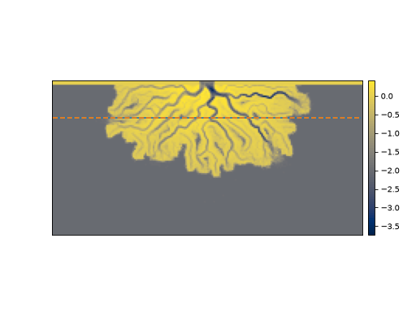
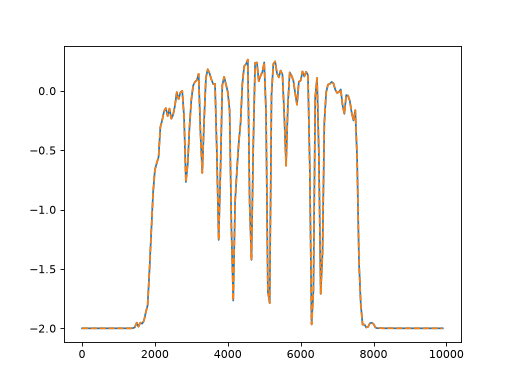
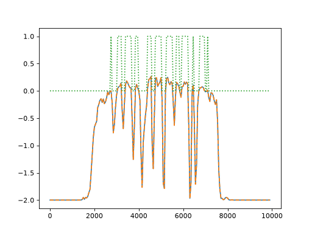
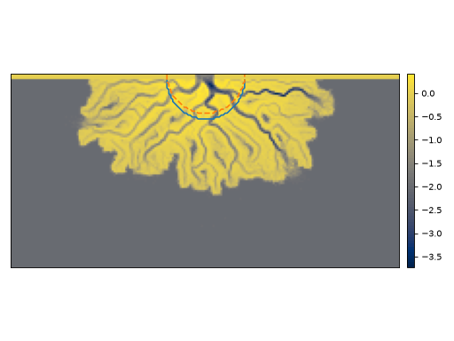
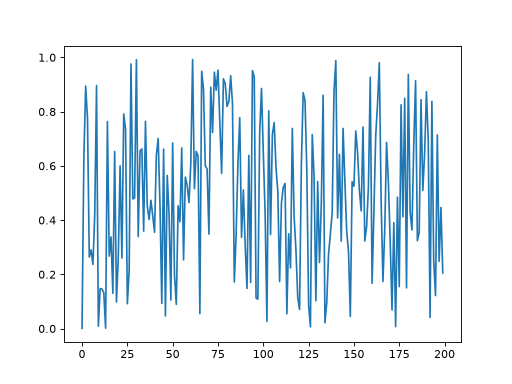

Creating Sections into Masks and Planforms¶
Conventionally, we draw Section objects into a Cube. However, it is also possible to create Section objects into other objects, such as a Mask or Planform, as well as any arbitrary array-like data.
First, let’s create a Section into a Cube and a basic Planform and compare.
golfcube = spl.sample_data.golf()
pl = spl.plan.Planform(golfcube, idx=-1)
css = spl.section.StrikeSection(golfcube, distance=1200)
pss = spl.section.StrikeSection(pl, distance=1200)
fig, ax = plt.subplots()
golfcube.quick_show('eta', idx=-1)
css.show_trace(ax=ax)
pss.show_trace('--', ax=ax)
plt.show()
(Source code, png, hires.png)
{kind=link}
{kind=link}

Because the css section is underlain by a Cube, it returns variables with dimensions time x along section. Whereas, the pss section is underlain by a Planform at time index -1, it returns variables with dimensions along section.
If we plot the elevation returned from pss and the last time index of the css, we can see that the underlying data are the same!
fig, ax = plt.subplots()
ax.plot(css.s, css['eta'][-1, :])
ax.plot(pss.s, pss['eta'], '--')
plt.show()
(Source code, png, hires.png)
{kind=link}
{kind=link}

Similarly to creating a Section into the Planform, we can use an underlying Mask.
EM = spl.mask.ElevationMask(
golfcube["eta"][-1],
elevation_threshold=0)
mss = spl.section.StrikeSection(EM, distance=1200)
ax.plot(mss.s, mss['mask'], ':')
plt.show()
(Source code, png, hires.png)
{kind=link}
{kind=link}

Important
A common “gotcha” is forgetting that some Section types (e.g.,
CircularSection and
RadialSection) will try to guess a useful
origin during instantiation, by reading various attributes of an
underlying DataCube. These attributes are not available during
instantiation of a Section that reads into a Planform or Mask. This
can lead to discrepencies in the locations of the Section objects!
In this example, the Section into the Planform is offset by L0, because this attribute is not known to the Planform.
ccs = spl.section.CircularSection(golfcube, radius=1000)
pcs = spl.section.CircularSection(pl, radius=1000)
ccs = spl.section.CircularSection(golfcube, radius=1000)
pcs = spl.section.CircularSection(pl, radius=1000)
fig, ax = plt.subplots()
golfcube.quick_show('eta', idx=-1)
ccs.show_trace(ax=ax)
pcs.show_trace('--', ax=ax)
plt.tight_layout()
plt.show()
(Source code, png, hires.png)
{kind=link}
{kind=link}

Arbitrary data¶
You can also create a Section into any array-like data.
arr = np.random.uniform(size=(100, 200))
arrss = spl.section.StrikeSection(arr, distance_idx=30)
Note
There are no variable names associated with a single array, but you still need to specify an argument when slicing the section. You can use anything, but we suggest [None].
fig, ax = plt.subplots()
ax.plot(arrss[None])
plt.show()
(Source code, png, hires.png)
{kind=link}
{kind=link}

Hint
Instead of manually creating sections into data in this way, consider the
register_variable() capabilities of the Cube. See an example here.